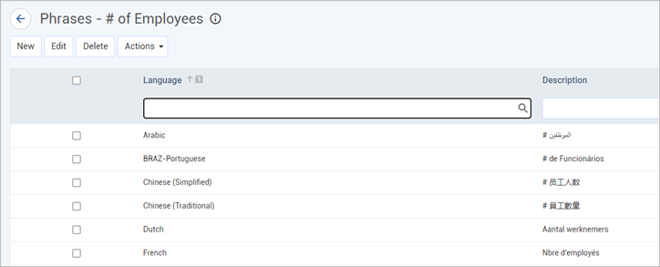
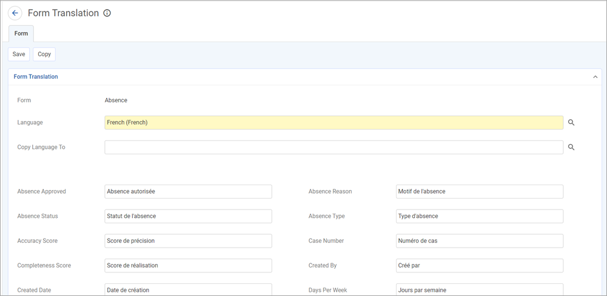
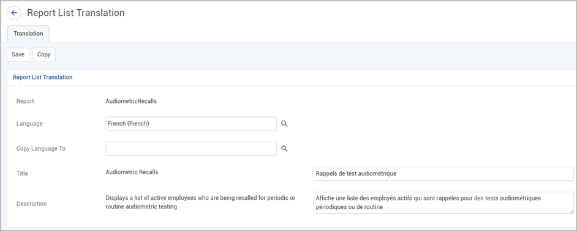
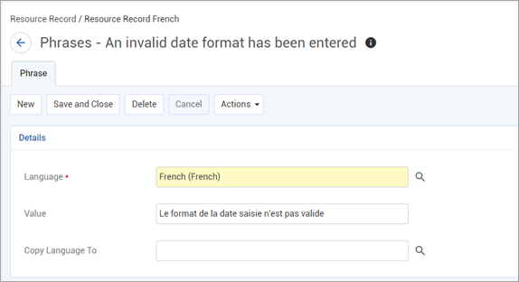
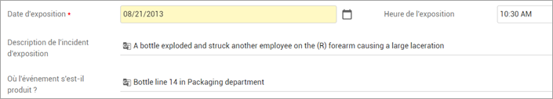

Cority provides the ability to customize the language translation on every page and on every report within the application. This allows different users to use different languages simultaneously in Cority.
You can use Google Translate or Microsoft Azure to translate field labels and phrases (see Using Google or Microsoft Azure Translate), and end users can use it to translate layout field labels, text, note and letter field values that were entered in another language (see Working in a Different Language).
The available languages are defined in the Language table. Each user can choose their preferred language in their system settings (see Changing Your System Settings). Once they have chosen their language, all text in the system will be displayed in the selected language. If a look-up table description does not have a translation for the selected Language, it will display in English.
The Data Cube can only be translated into specific languages. For each language record, indicate which language should be used for the Data Cube entities. For example, you might have two language records for English: the default (US) and UK. For both of these languages, the Data Cube Language would be set to the default English.
The administrator can also use this feature to change the wording of any English phrase. Translations are global and affect the entire system. Once a phrase has been translated, the same phrase throughout the application will be replaced with the given translation.
When you click Translation in the Administrator menu, you then choose what type of translations you want to work with; e.g. forms, form tooltips, phrases, exceptions (error messages), report titles, or portal phrases.
Performing translations in any of these sections will cause the translations to propagate through the entire system. So even if you translate something on the employee form, if the same phrase appears in the case form, it will also be translated.
Each view displays the module(s) associated with the phrase. If a phrase exists in ten or more modules, it is designated “General”. You can search by module to filter the phrases.
If you are unsure which option a phrase it would fall under, choose Phrase Translations; this option lists all possible phrases in the system that can be translated. The list can be filtered to show phrases that have or have not been translated into the current language, .
If you are translating a new dashboard text indicator, choose Actions»Refresh Phrases to add the indicator text to the phrases list.
The Phrase Translations form also allows you to use Google Translate: for more information, see “Using Google or Microsoft Azure Translate”.

In all of these options, you can use an existing language’s translation of a phrase as a base for a new language, if they are similar. When in the translation form, select the language that you want to copy to, then click Copy. This will copy all the current translations for the form to the new language.
Form translations allows you to pick a specific form to translate. Remember that any translations done here will not only affect the current form, but any other place in the application that uses the same phrase.
In the Administrator menu, click Translation.
Click Form Translations.
Click the form that you want to translate.
All field labels and phrases on the form are listed. Translate these as necessary and then click Save.
All translations take effect immediately. If no translation is specified for a phrase, then the default phrase is used.

Reports list translations allow you to translate the title and description of each report in the system. On the list you can filter by title, description, and module.
In the Administrator menu, click Translation.
Click Reports List Translations.
Click the report that you want to translate.
Translate the Title and/or Description as necessary and then click Save.

Exception phrases show all phrases related to errors/exceptions in the application. Each error message has an error code for reference. The list shows the translation for each error message for in your current language. You cannot change the default English translation for error messages.
In the Administrator menu, click Translation.
Click Exception Translations.
Click the error code that you want to translate.
Any current translations (other than English) are listed. Change these as required. To add a translation for a different language, click New (or click the inline add icon), then select the Language and enter the description.

Google Translate or Microsoft Azure can be used to translate Cority forms and field labels as well as values entered in text, note and letter fields. This requires the appropriate “Translate API Key” system setting to be defined, as well as the “Translation API Tool” system setting.
Translating Forms and Field Labels:
Make sure the Language look-up table includes the Google (or Microsoft Azure) Translation Language code for the language you want to translate into.
Set your Language system setting to the language you want to translate into.
In the Phrase Translations form, select one or more items and choose Actions»Translate Selected Phrases via Translation API.
If there is already a translation for a selected phrase, it will be overwritten with the Google (or Microsoft) translation (you will be prompted to accept or cancel this).
Translating Text Field Values:
Make sure the “Enable Translatable Free Text Fields” system setting is turned on.
If using Google Translate, you must use Google Chrome, or have the Google Toolbar extension for IE or Firefox.
Any text fields that can be translated are identified with the icon:

Right-click on the text field and choose Translate into <language>. If using Microsoft, there will be a Use the Microsoft Azure suggestion option.
The field text is translated to your local language and becomes read-only. You can click into the field to see the original text and edit if necessary. When you click away again, text reverts to the read-only translation.
Use the Import Utility to import translations from a text file into the Application Translations (DT_ResourceRecord) data table. For more information, see Importing Text or XML Files into Cority Tables.
Below is a chart of the fields when importing translations and a description of what they are used for.
|
Field |
Description |
|---|---|
|
CultureCode |
This field is not used and should not be imported. |
|
ResourceKey |
The original text/phrase to be translated. |
|
ResourceType |
This field determines the type of translation. For generic/global translations this field should be imported as “global”. When importing look-up tables this field should be imported as “<Look-upTableName>Translation”. |
|
ResourceValue |
The original or translated label that you see in the application. |
|
Language.Code |
The language code for which this translation is for. |
|
Language.Description |
The description of the language. |